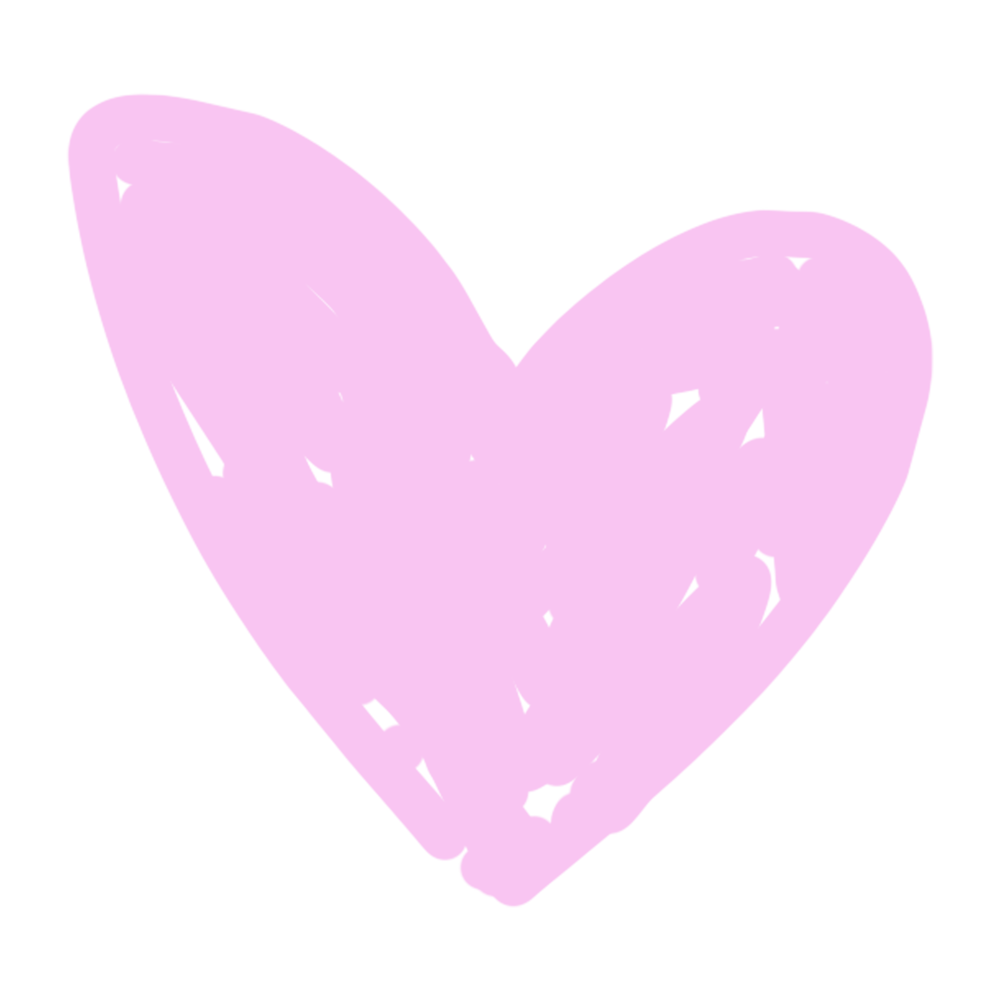
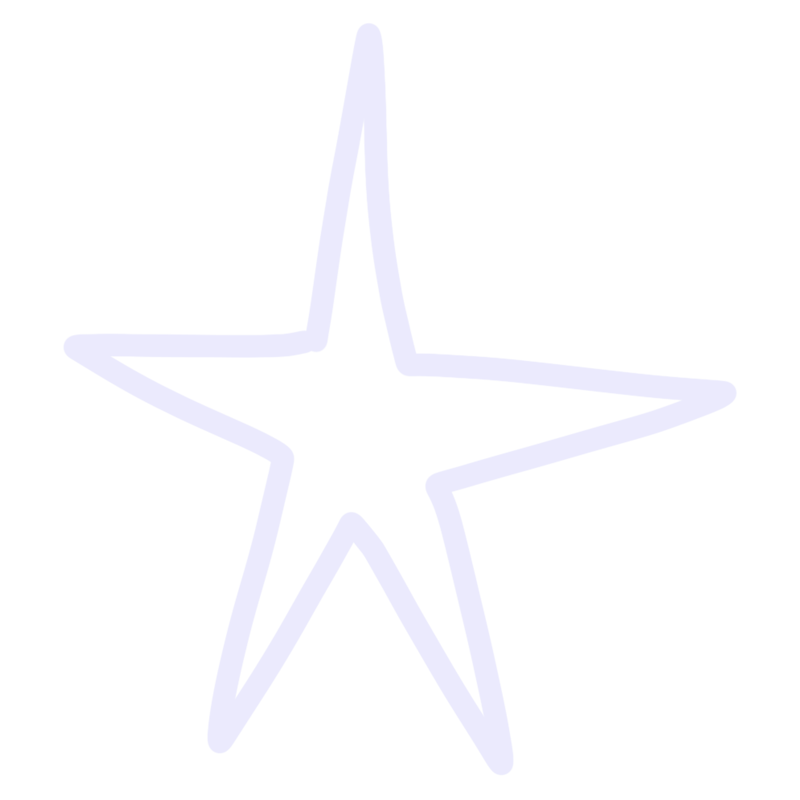
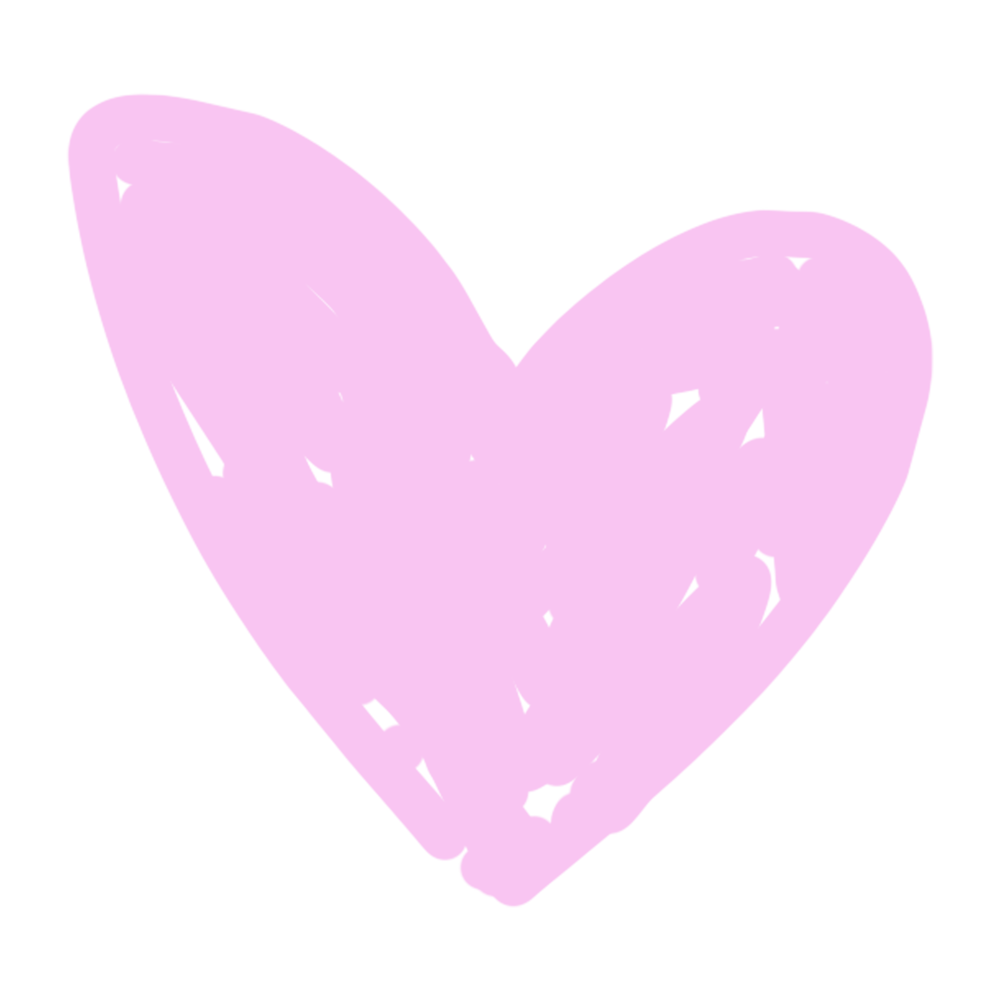
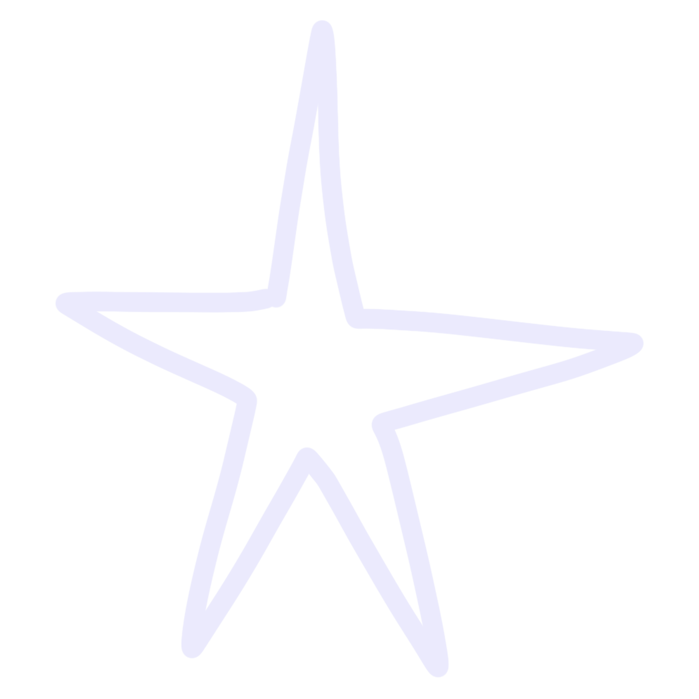

Notes
food for thought
In the surreal dance of modern existence, Kilian's iPhone emerges as a silent observer in the theatre of our lives. With each swipe, tap, and click, it beckons us into an infinite realm, inviting us to ponder the profound shifts in our relationship with nature. Amidst the marvels of connectivity, do we risk losing touch with the essence of being, with the raw, unfiltered moments that breathe life into our existence?
"We're seeing corporations using powerful artificial intelligence to outsmart us and figure out how to pull our attention towards the things they want us to look at, rather than things that are most consistent with our goals and our values and our lives." - Justin Rosenstein, co-inventor of Google Drive
artists + useful links
Olafur Eliasson and his works created in collaboration with nature eg. The Weather Project, 2003 & Ice Watch, 2014
Rick Rubin's book The Creative Act: A Way of Being
Melbourne based artist Esther Olsson and her paintings depicting vibrant, imaginary worlds
Jan van Toorn's graphic design work
the creative process
 


